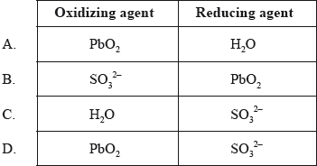
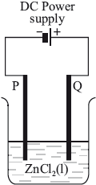

HL Paper 1
A reaction takes place when a rechargeable battery is used:
Pb(s) + PbO2(s) + 4H+(aq) + 2SO42−(aq) → 2PbSO4(s) + 2H2O(l)
Which statements are correct?
I. H+ is reduced
II. The oxidation state of Pb metal changes from 0 to +2
III. PbO2 is the oxidising agent
A. I and II only
B. I and III only
C. II and III only
D. I, II and III
Which statement is correct for a voltaic but not for an electrolytic cell?
B. The anode is where oxidation occurs.
C. Ions move in the electrolyte.
D. Electrons flow from the negative electrode to the positive electrode.
Which element is reduced in the following decomposition?
(NH4)2Cr2O7(s) → N2(g) + Cr2O3(s) + 4H2O(g)
A. N
B. H
C. Cr
D. O
Which change represents oxidation?
A. HClO4 to HClO3
B. N2 to NH3
C. N2O to NO
D. SO42− to SO32−
What is the correct order of reaction types in the following sequence?

What is the name of \({\text{Mn}}{{\text{O}}_{\text{2}}}\)?
A. Manganese(II) oxide
B. Magnesium(II) oxide
C. Manganese(IV) oxide
D. Magnesium(IV) oxide
The following equations indicate reactions that occur spontaneously.
\[\begin{array}{*{20}{l}} {{\text{Fe(s)}} + {\text{NiC}}{{\text{l}}_2}{\text{(aq)}} \to {\text{FeC}}{{\text{l}}_2}{\text{(aq)}} + {\text{Ni(s)}}} \\ {{\text{Zn(s)}} + {\text{FeC}}{{\text{l}}_2}{\text{(aq)}} \to {\text{ZnC}}{{\text{l}}_2}{\text{(aq)}} + {\text{Fe(s)}}} \\ {{\text{Ni(s)}} + {\text{PbC}}{{\text{l}}_2}{\text{(aq)}} \to {\text{NiC}}{{\text{l}}_2}{\text{(aq)}} + {\text{Pb(s)}}} \end{array}\]
Which is the increasing order of the reactivity of the metals?
A. \({\text{Fe}} < {\text{Ni}} < {\text{Zn}} < {\text{Pb}}\)
B. \({\text{Pb}} < {\text{Ni}} < {\text{Fe}} < {\text{Zn}}\)
C. \({\text{Ni}} < {\text{Zn}} < {\text{Pb}} < {\text{Fe}}\)
D. \({\text{Zn}} < {\text{Fe}} < {\text{Ni}} < {\text{Pb}}\)
Consider the following half-equations:
I2 (s) + 2e– \( \rightleftharpoons \) 2I– (aq) Eθ = +0.54 V
(brown) (colourless)
MnO4– (aq) + 8H+ (aq) + 5e– \( \rightleftharpoons \) Mn2+ (aq) + 4H2O (l) Eθ = +1.51 V
(purple) (colourless)
Which statement is correct for the reaction between KMnO4 (aq) and KI (aq) in acidic conditions?
A. MnO4– reduces I– to I2.
B. I– reduces MnO4– to Mn2+.
C. The colour changes from brown to purple.
D. MnO4– is oxidized to Mn2+.
Which is a redox reaction?
A. \({{\text{[Cu(}}{{\text{H}}_{\text{2}}}{\text{O}}{{\text{)}}_{\text{4}}}{\text{]}}^{2 + }}{\text{(aq)}} + {\text{4C}}{{\text{l}}^ - }{\text{(aq)}} \to {{\text{[CuC}}{{\text{l}}_{\text{4}}}{\text{]}}^{2 - }}{\text{(aq)}} + {\text{4}}{{\text{H}}_{\text{2}}}{\text{O(l)}}\)
B. \({\text{A}}{{\text{g}}^ + }{\text{(aq)}} + {\text{C}}{{\text{l}}^ - }{\text{(aq)}} \to {\text{AgCl(s)}}\)
C. \({\text{Zn(s)}} + {\text{2HCl(aq)}} \to {\text{ZnC}}{{\text{l}}_{\text{2}}}{\text{(aq)}} + {{\text{H}}_{\text{2}}}{\text{(g)}}\)
D. \({\text{2}}{{\text{K}}_{\text{2}}}{\text{Cr}}{{\text{O}}_{\text{4}}}{\text{(aq)}} + {\text{2HCl(aq)}} \to {{\text{K}}_{\text{2}}}{\text{C}}{{\text{r}}_{\text{2}}}{{\text{O}}_{\text{7}}}{\text{(aq)}} + {{\text{H}}_{\text{2}}}{\text{O(l)}} + {\text{2KCl(aq)}}\)
Applying IUPAC rules, what is the name of MnO2?
B. Manganese(II) oxide
C. Magnesium(IV) oxide
D. Manganese(IV) oxide
Consider the following reaction.
\[{\text{MnO}}_4^ - ({\text{aq)}} + 8{{\text{H}}^ + }({\text{aq)}} + 5{\text{F}}{{\text{e}}^{2 + }}({\text{aq)}} \to {\text{M}}{{\text{n}}^{2 + }}{\text{(aq)}} + 5{\text{F}}{{\text{e}}^{3 + }}({\text{aq)}} + 4{{\text{H}}_{\text{2}}}{\text{O(l)}}\]
Which statement is correct?
A. \({\text{MnO}}_4^ - \) is the oxidizing agent and it loses electrons.
B. \({\text{MnO}}_4^ - \) is the reducing agent and it loses electrons.
C. \({\text{MnO}}_4^ - \) is the oxidizing agent and it gains electrons.
D. \({\text{MnO}}_4^ - \) is the reducing agent and it gains electrons.
Which species are the oxidizing and reducing agents in the following reaction?
\[{\text{SO}}_3^{2 - }{\text{(aq)}} + {\text{Pb}}{{\text{O}}_2}{\text{(s)}} + {{\text{H}}_2}{\text{O(l)}} \to {\text{SO}}_4^{2 - }{\text{(aq)}} + {\text{Pb(OH}}{{\text{)}}_2}{\text{(s)}}\]

Which compounds can be reduced?
I. C2H4
II. CH3COOH
III. CH3CHO
A. I and II only
B. I and III only
C. II and III only
D. I, II and III
Which species are produced at each electrode during the electrolysis of molten lead(II) bromide, \({\text{PbB}}{{\text{r}}_{\text{2}}}{\text{(l)}}\)?

Which are correct statements about a voltaic cell?
I. A spontaneous redox reaction occurs which converts chemical energy to electrical energy.
II. Oxidation occurs at the negative electrode (anode).
III. Electricity is conducted by the movement of electrons through the salt bridge.
A. I and II only
B. I and III only
C. II and III only
D. I, II and III
Consider the following reaction.
\[{\text{2Cr(OH}}{{\text{)}}_3}{\text{(s)}} + {\text{6Cl}}{{\text{O}}^ - }{\text{(aq)}} \to {\text{2CrO}}_4^{2 - }{\text{(aq)}} + {\text{3C}}{{\text{l}}_2}{\text{(g)}} + {\text{2O}}{{\text{H}}^ - }{\text{(aq)}} + {\text{2}}{{\text{H}}_2}{\text{O(l)}}\]
Which statement is correct?
A. \({\text{Cr(OH}}{{\text{)}}_{\text{3}}}\) is the oxidizing agent and the oxidation number of chromium changes from +3 to +6.
B. \({\text{Cr(OH}}{{\text{)}}_{\text{3}}}\) is the reducing agent and undergoes reduction.
C. \({\text{Cl}}{{\text{O}}^ - }\) is the oxidizing agent and the oxidation number of chlorine changes from +1 to 0.
D. \({\text{Cl}}{{\text{O}}^ - }\) is the reducing agent and the oxidation number of chlorine changes from –1 to 0.
Which represents a redox reaction?
A. \({\text{NaH(s)}} + {{\text{H}}_{\text{2}}}{\text{O(l)}} \to {\text{NaOH(aq)}} + {{\text{H}}_{\text{2}}}{\text{(g)}}\)
B. \({\text{CaC}}{{\text{O}}_{\text{3}}}{\text{(s)}} \to {\text{CaO(s)}} + {\text{C}}{{\text{O}}_{\text{2}}}{\text{(g)}}\)
C. \({\text{CuC}}{{\text{l}}_{\text{2}}}{\text{(aq)}} + {{\text{K}}_{\text{2}}}{\text{S(aq)}} \to {\text{CuS(s)}} + {\text{2KCl(aq)}}\)
D. \({\text{HCl(aq)}} + {\text{N}}{{\text{H}}_{\text{3}}}{\text{(aq)}} \to {\text{NH}}_4^ + {\text{C}}{{\text{l}}^ - }{\text{(aq)}}\)
In the electrolytic cell shown, at which electrode will chlorine form, and what is the process taking place there?


Which compound contains nitrogen with an oxidation number of +3?
A. NH4Cl
B. HNO3
C. N2O4
D. KNO2